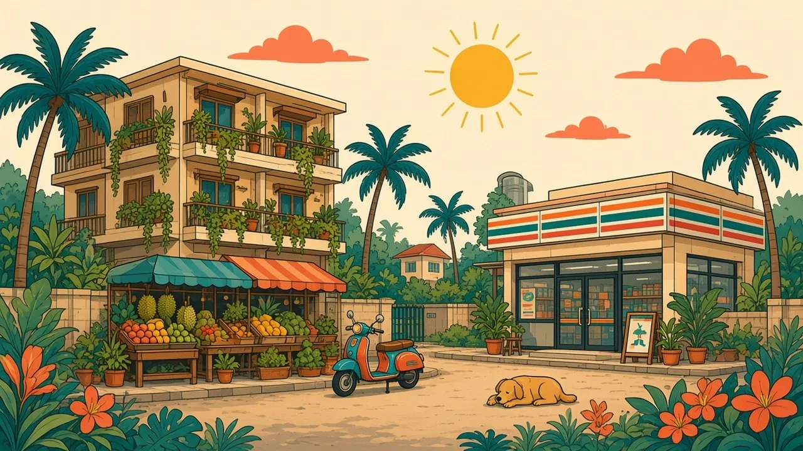

Living tips
Etiquette, the scams that still work, safety numbers, hospitals, and the seasons, including the northern haze.

Etiquette
- Monarchy. Thailand's lèse-majesté law is real. Keep comments factual and careful, online and off.
- Temples. Cover shoulders and knees. Shoes off. Speak quietly.
- Wai. The usual greeting. Return one when it is offered.
- Feet and head. Feet are low, heads are high. Do not point your feet at a Buddha image or rest them on chairs.
- Anger. Raising your voice in public makes the situation worse. Step away.
Scams
Well-known patterns. This list does not name businesses.
- Fake TDAC sites that charge a fee. Use only tdac.immigration.go.th.
- Gem scam: a new friend, a "closed" attraction, a jewellery shop with a special price.
- "Grand Palace closed today" from a tuk-tuk driver who has another plan.
- Tuk-tuk shopping detours. Agree the fare and the destination, or use Grab.
- Jet-ski damage claims after a rental. Photograph the craft before you start.
- Unofficial taxis in the arrivals hall. Use the public queue or the Grab pin.
Safety
Road accidents, especially on motorbikes, are the main visitor risk. Helmet on. Valid licence if you ride, for the law and for insurance.
- Tourist Police 1155
- Emergency 191
- Ambulance 1669
Source: GOV.UK, Tourist Police.
Healthcare
Public hospitals are cheaper and busier. Private hospitals are where most visitors go for anything urgent, and they expect payment or a guarantee letter. Pharmacies handle simple meds. Carry insurance details. Insurance
Weather and seasons
- Cool and dry: around November to February.
- Hot: around March to May.
- Rainy: around June to October.
- The North has a smoky / burning season around February to April, with poor air quality in Chiang Mai, Chiang Rai and nearby provinces.
Official seasons: summer mid-February to mid-May, rainy mid-May to mid-October, cool mid-October to mid-February. The Gulf (east) coast of the south stays rainy to the end of the year, wettest around November (Thai Meteorological Department).
Official sources
Last checked: 2026-10-21